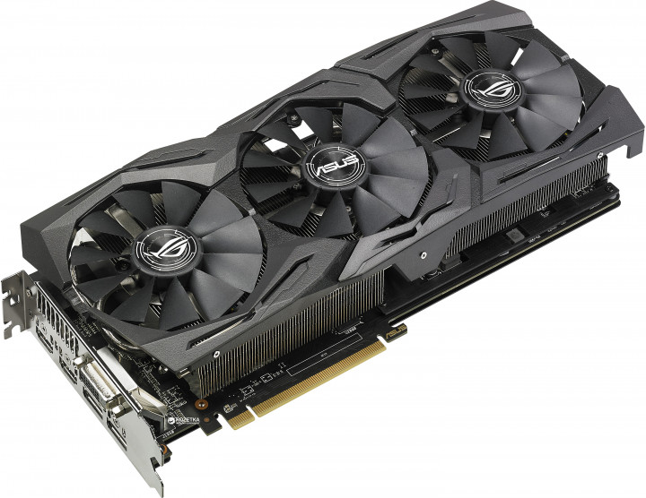
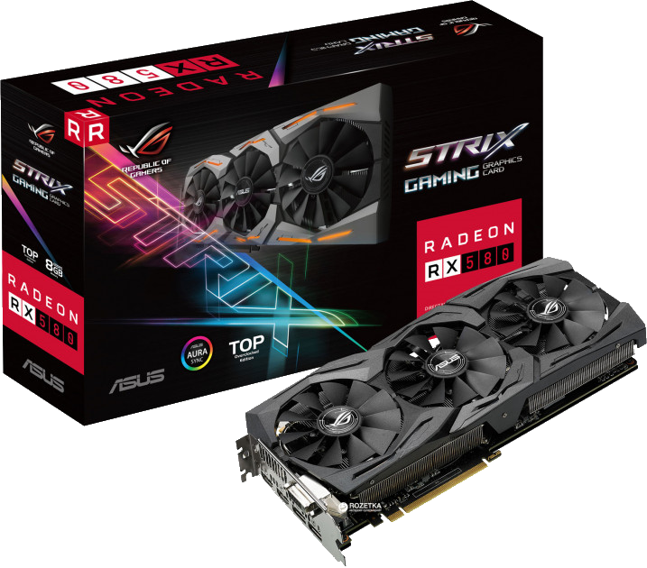

Asus Rog Strix RX 580

Описание:
ROG Strix — это новая серия геймерских устройств в рамках бренда Republic of Gamers.
Их отличительной особенностью являются высочайшая производительность, использование инновационных
технологий, безупречный уровень надежности и стильный дизайн, подчеркивающий индивидуальность
каждого геймера.Устройства серии ROG Strix – это скорость и функциональность, необходимая для
победы в любой игре!
На шаг впереди конкурентов
Видеокарта ROG Strix Radeon RX 580 – это геймерская модель, оснащенная множеством эксклюзивных
технологий ASUS. Используемая на ней система охлаждения DirectCU III может похвастать высокой
эффективностью за счет вентиляторов с оптимизированной геометрией крыльчатки, а безупречная надежность
устройства обеспечивается полностью автоматизированным процессом производства (технология Auto-Extreme).
Система подсветки Aura RGB поможет сделать дизайн компьютера незабываемым с помощью оригинальных световых
эффектов, в то время как совместимые с VR-устройствами порты HDMI подарят геймерам возможность окунуться в
захватывающий мир виртуальной реальности. В комплект поставки ROG Strix Radeon RX 580 входят утилиты GPU
Tweak II (для настройки и мониторинга параметров видеокарты) и XSplit Gamecaster (для записи и трансляции
процесса игры в режиме реального времени).
Технические характеристика товара:
-
Видеокарта:
Asus PCI-Ex Radeon RX580 ROG Strix 8GB GDDR5 (256bit) (1411/8000)
(DVI, 2 x HDMI, 2 x DisplayPort) (ROG-STRIX-RX580-T8G-GAMING)
-
Графический чип:
RX 580
-
Частота памяти:
8000 Гц
-
Объем памяти:
8 ГБ
-
Частота ядра(Gaming Mode):
1411 МГц
-
Частота ядра(OC Mode):
1431 МГц
-
Система охлаждения:
DirectCU III
-
Разрядность шины памяти:
256 бит
-
Выходы DVI:
1
-
Максимально поддерживаемое разрешение:
7680x4320
-
Поддерживаемые 3D API:
DirectX 12, OpenGL 4.5
-
Тип памяти:
GDDR5
-
Интерфейс:
PCI-Express x16 3.0
-
Размеры:
298 x 134 x 52.5 мм
-
Разъемы:
DVI,DisplayPort,HDMI
-
Форм-фактор:
Стандартная
-
Тип системы охлаждения:
Активная
-
Подключение моста Nvidia SLI
Нет
-
Поддержка AMD CrossFireX:
Есть
-
Гарантия:
36 месяцев
Подробное описание товара
-
Высокоэффективное охлаждение:
Кулер DirectCU III с технологией «прямого контакта»
На данную видеокарту установлена эксклюзивная система охлаждения DirectCU III с технологией «прямого
контакта»:медные тепловые трубки кулера непосредственно контактируют с поверхностью графическогопроцессора.
-
Оптимизированные вентиляторы. Усиленный воздушный поток и повышенное статическое давление.
Три высококачественных вентилятора с оптимизированной геометрией крыльчатки, входящие в состав системы
охлаждения DirectCU III, усиливают воздушный поток и увеличивают статическое давление по сравнению с
обычными. Кроме того, благодаря продуманной конструкции радиатора данный кулер способен охлаждать видеокарту
при невысоком уровне нагрузки в пассивном режиме, то есть при нулевом уровне шума.
-
Технология ASUS FanConnect. Дополнительные разъемы для вентиляторов.
Система охлаждения геймерского компьютера может быть неэффективна из-за того, что алгоритм работы
корпусных вентиляторов учитывает лишь температуру центрального процессора, хотя во время длительных игровых
сессий температура графического процессора зачастую бывает значительно выше. Чтобы устранить эту проблему,
видеокарты серии ROG Strix оснащаются двумя 4-контактными разъемами для системных вентиляторов с
регулировкой на основе температуры графического процессора.
-
Технология Extended Frequency Range
Высокому качеству готового устройства способствует полностью автоматизированный процесс производства
(технология Auto-Extreme), который соответствует более строгим экологическим нормам за счет устранения
вредных химических веществ и уменьшения энергопотребления на 50%.
-
6-фазная система питания и технология Super Alloy Power II
Стабильной работе видеокарты способствует высококачественная элементная база. Используемые на ней
компоненты Super Alloy Power II обеспечивают эффективное потребление энергии и снижение температуры примерно
на 50% по сравнению с предыдущими решениями.
-
Система Aura RGB. Стильная светодиодная подсветка.
Стильная светодиодная подсветка Aura RGB, реализованная на видеокартах серии ROG Strix, предлагает
насладиться миллионами цветовых комбинаций в сочетании с шестью завораживающими визуальными эффектами.
-
Разъемы HDMI с поддержкой VR-устройств. Окунись в другую реальность.
Видеокарты ROG Strix обладают двумя разъемами HDMI, что позволяет одновременно подключить и дисплей,
и систему виртуальной реальности.
-
Утилита GPU Tweak II с модулем XSplit Gamecaster для гибкой настройки графической подсистемы
Современные видеокарты Asus совместимы с эксклюзивной утилитой GPU Tweak II, с помощью которой можно
получить полный контроль над графической подсистемой компьютера. Например, новая функция Gaming Booster
позволяет моментально выделить все доступные вычислительные ресурсы под 3D-приложение, чтобы обеспечить
максимальную производительность.
-
Функция Gaming Booster: оптимизация одним щелчком мыши
Визуальные эффекты: повышение производительности за счет отключения визуальных эффектов интерфейса Windows.
Системные службы: автоматическое или ручное отключение служб и процессов Windows.
Дефрагментация памяти: высвобождение системной памяти без закрытия запущенных процессов.
-
Утилита XSplit Gamecaster
В пакет программного обеспечения, прилагаемого к данной видеокарте, входит 1-годичная лицензия на
XSplit Gamecaster – удобную утилиту для трансляции и записи процесса игры. Реализованная в виде
накладываемого поверх самой игры интерфейса, она также отображает данные системного мониторинга
(частоту графического процессора, температуру видеокарты, уровень загрузки видеопамяти) и содержит
элементы управления утилиты GPU Tweak II (например, для переключения между профилями с настройками
или моментального разгона видеокарты).

Также рекомендуем к данному товару